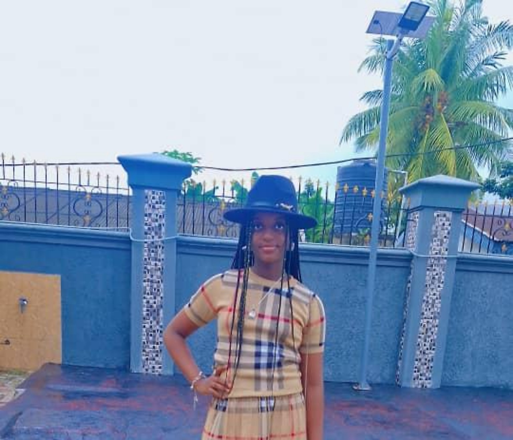

What I'm learning
I'm building my confidence with HTML and CSS, and learning how to organise a website so it works on different screen sizes.
A bit more about me
I'm still figuring things out, learning as I go and enjoying the little things along the way.

A face behind the website :)
My story so far
Most of my days are a mix of school, spending time with people I care about and finding something new to learn. I enjoy asking questions and trying things for myself, even when I don't get them right the first time.
Recently, I've become interested in web development. It's exciting to write a few lines of code and watch them turn into something people can actually use. This website is one of my practice projects.
Outside school, I make time for singing, listening to music and taking photos whenever something catches my eye.
I'm building my confidence with HTML and CSS, and learning how to organise a website so it works on different screen sizes.
Being respectful, staying curious, keeping good company and making progress without comparing my journey to everyone else's.
I want to keep practising, build more projects and become better at turning ideas into real things on the web.
Thanks for taking a moment to learn about me.
Send me a message